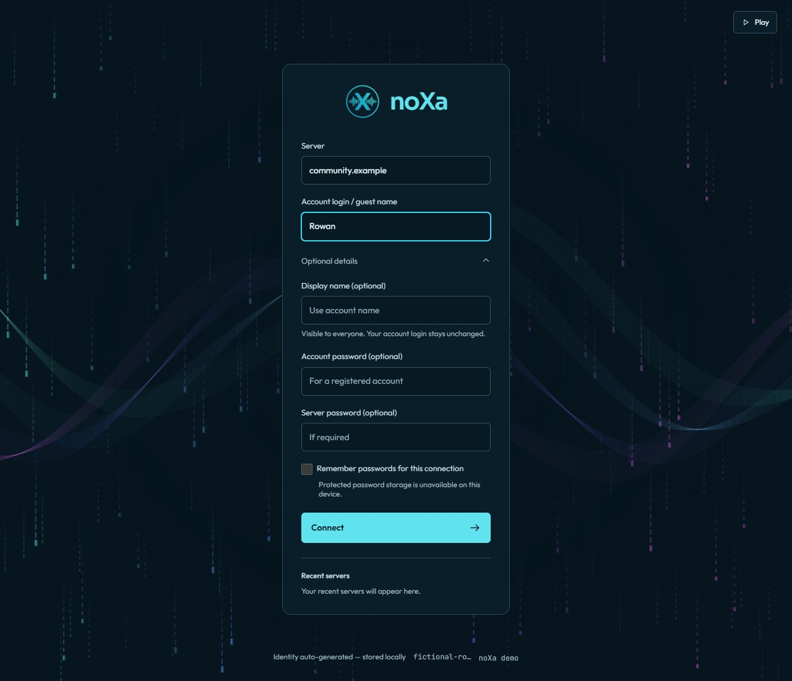
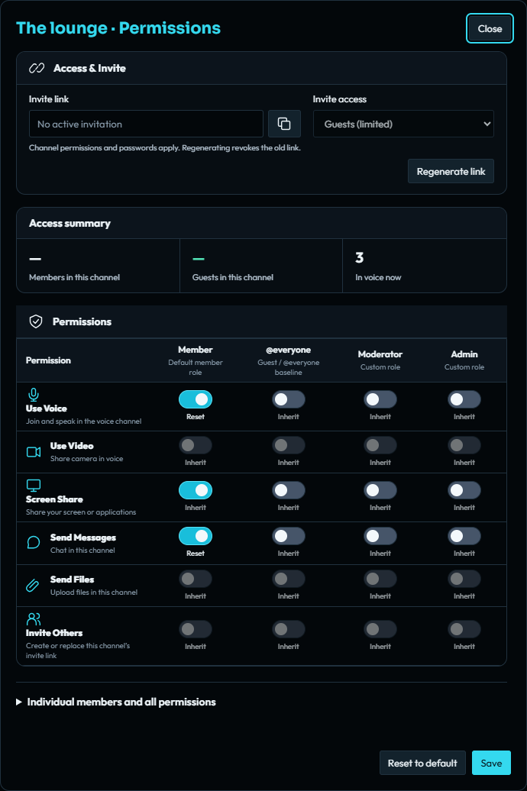

Server administration · Public alpha
Set up your own noXa server
Build the Docker stack, create the owner, open your first channels and check that people can connect.
1. Prepare a fresh installation
You need a host with Docker Engine, the Docker Compose plugin, Git, and an empty PostgreSQL database. The repository stack includes PostgreSQL 16 and Redis 7. Use matching current server and client versions.
The commands below use Bash and the repository’s default database name and owner, noxa. They initialize a fresh installation. Do not run initial setup against an existing server to reset its owner or password.
git clone https://github.com/arumes31/noxa.git
cd noxa
cp .env.example .env
printf '\nNOXA_WEB_DOMAIN=localhost\n' >> .env
docker compose build noxa
docker compose up -d postgres redis
docker compose stop noxaThe current Compose file requires NOXA_WEB_DOMAIN even before the optional web profile is started. The local placeholder above keeps initial setup valid; replace that entry with your real app hostname when configuring HTTPS.
Wait for the database to become healthy with docker compose ps. The server must remain stopped during offline account creation and role activation.
Using an external PostgreSQL service? Add -f docker-compose.yml -f docker-compose.external-db.yml to every Compose command, configure the external database URLs, and start only Redis instead of the bundled PostgreSQL service.
2. Initialize the database and create the owner
The current Compose stack separates the serving database account from the offline operator account. Run schema and account tools through noxa-operator, which has the migration owner credential and shares the server’s data volume.
docker compose --profile tools run --rm --no-deps noxa-operator /out/migrate
read -r -s -p 'Choose an owner account password: ' OWNER_PASSWORD; printf '\n'
printf '%s\n' "$OWNER_PASSWORD" | docker compose --profile tools run -T --rm --no-deps noxa-operator /out/adduser -nickname owner -password-stdin
unset OWNER_PASSWORDKeep the owner password securely. Copy the exact unique_id printed by adduser; the next command needs that ID, not the account nickname. Replace the placeholder below before running it.
docker compose --profile tools run --rm --no-deps noxa-operator /out/role-setup -owner-uid '<OWNER_UNIQUE_ID>' -activate -confirm ACTIVATE-ROLES-V1 -chat-master-key-file /data/keys/chat_master.key -query-timeout 30sThe setup report must say active: true. Activation is a one-time operation and refuses to run alongside a serving server. The selected account becomes Server owner; joining first does not grant administration and there is no privilege token.
3. Provision the serving and backup database roles
The noxa service connects as noxa_runtime, not as the PostgreSQL owner. Provision its permissions after offline schema setup. The tracked SQL script also creates a separate read-only backup role. Choose two different passwords of at least 24 characters.
read -r -s -p 'Runtime database password: ' NOXA_RUNTIME_PASSWORD; printf '\n'
read -r -s -p 'Backup database password: ' NOXA_BACKUP_PASSWORD; printf '\n'
export NOXA_RUNTIME_PASSWORD NOXA_BACKUP_PASSWORD
docker compose exec -T -e NOXA_RUNTIME_PASSWORD -e NOXA_BACKUP_PASSWORD postgres psql -U noxa -d noxa < scripts/provision-database-roles.sql
export NOXA_RUNTIME_DB_PASSWORD="$NOXA_RUNTIME_PASSWORD"
export BACKUP_POSTGRES_PASSWORD="$NOXA_BACKUP_PASSWORD"
unset NOXA_RUNTIME_PASSWORD NOXA_BACKUP_PASSWORDThese exports configure this shell only. Before future restarts, persist the runtime and backup credentials using the corresponding NOXA_RUNTIME_DB_PASSWORD_FILE and BACKUP_POSTGRES_PASSWORD_FILE settings, or your deployment’s secret mechanism. Configure exactly one nonempty value or file source for each secret. Never reuse the migration owner password for a serving account.
If you changed POSTGRES_USER or POSTGRES_DB, update the psql arguments. For an external database, run the same tracked SQL script as its offline database owner with an authenticated, TLS-verified PostgreSQL client.
4. Start the server and sign in
docker compose up -d noxa
docker compose logs --tail=50 noxa
docker compose exec noxa wget -qO- http://127.0.0.1:12337/readyzReadiness should return ok. Open the Windows desktop client and connect to localhost:12333, or the host’s reachable address. Enter owner in Account login / guest name and use the account password you chose. An optional server join password is a separate field.
Compare the certificate fingerprint with the server’s startup log before trusting the first connection. An optional display name changes the name people see without changing the owner login, identity or roles.
If the service cannot connect to PostgreSQL, first check that the runtime role was provisioned and that its password is available in this shell or configured secret file. Do not work around the problem by giving the serving container the database owner credential.


5. Give members access to channels
A fresh installation starts closed: @everyone has no grants, Member, Moderator and Administrator are unassigned, and there is no default member role.
- Open Tools → Roles. Select a role, choose Start from a template when useful, review its permissions and save.
- In Members, assign Member to a registered account. As owner, set Role for new members if future registrations should receive it. This does not change existing accounts or guests.
- Right-click a channel and choose Channel access. Existing channels deny View channel to
@everyone, so assigning Member alone does not make them visible. - For a members-only channel, retain the everyone deny and allow the Member role to view it, with the desired chat and voice permissions and their prerequisites. For a public channel, review the Public preset before saving.
- Use Preview role changes before saving and Check access afterward. Test with an ordinary member and a guest; owner/admin access bypasses configurable channel overrides.

Only the owner can grant Administrator or transfer ownership. Keep administration limited to trusted operators and use dedicated moderation roles for routine work. See the roles and channel access guide for inheritance and hierarchy.


6. Configure reachable voice and file connections
A successful control login does not prove that voice works. WebRTC media uses its own UDP sockets. The legacy UDP keepalive port 12334 is not the voice transport.
| Port | Purpose | Exposure |
|---|---|---|
| TCP 12333 | Desktop TLS control | Reachable by your members |
| TCP 12336 | TLS file transfer | Reachable for client uploads and downloads |
| Configured UDP media port | WebRTC voice, camera and screen sharing | Forward the same published port |
| UDP 12334 | Optional legacy keepalive | Only if your deployment uses it |
| TCP 12335 / 12338 | Raw Query / gRPC administration | Keep private; gRPC must remain loopback-only |
| TCP 12337 | Health, metrics, events, hooks and file links | Keep private; expose selected authenticated paths through HTTPS |
| TCP 12339 | Optional Query over SSH | Publish deliberately when enabled |
For Docker bridge networking or a port-forwarded server, create compose.media.yml with a fixed UDP listener. 203.0.113.10 is a documentation address: replace it with your real public IPv4 address.
services:
noxa:
environment:
NOXA_WEBRTC_UDP_ADDR: ":12367"
NOXA_WEBRTC_EXTERNAL_IPS: "203.0.113.10"
ports:
- "12367:12367/udp"docker compose -f docker-compose.yml -f compose.media.yml up -d noxaUse the same override on subsequent Compose commands. Forward UDP 12367 at the router and allow it through the host firewall. Advertising an external IP does not create a forwarding rule. Configure STUN/TURN for restrictive networks and test from a different network. Private/LAN WebRTC destinations require an explicit, narrow NOXA_WEBRTC_ALLOWED_REMOTE_CIDRS allowlist.
7. Prepare for real users
- Replace development database credentials, set
NOXA_DEV_MODE=false, and usesslmode=verify-full. The current production validator requires verified database TLS. Set up PostgreSQL certificates and trust correctly; changingPOSTGRES_SSLMODEalone does not enable database TLS. - Choose an admission policy: a strong server password, or deliberate anonymous admission with
NOXA_ALLOW_ANONYMOUS=true. Authentication and roles still control protected actions. - Set a strong Redis password for a non-loopback Redis service. Keep control and file-transfer TLS enabled.
- Pass extra settings explicitly in the Compose service’s
environmentsection when the supplied Compose file does not reference them. A new line in.envis not automatically an application setting. - Back up the database, matching chat and PII keys, files, recordings, TLS identity and configuration. Complete an isolated restore drill.
- Verify ordinary member login, channel visibility, voice both ways, screen sharing, and an upload/download from outside the host network.
For the browser client, configure an HTTPS domain and the web listener separately using the PWA hosting instructions; passkeys belong to that origin. Then follow the mobile and browser guide to link and install a client.